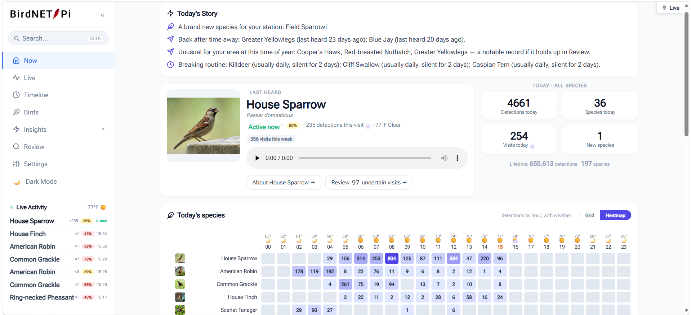
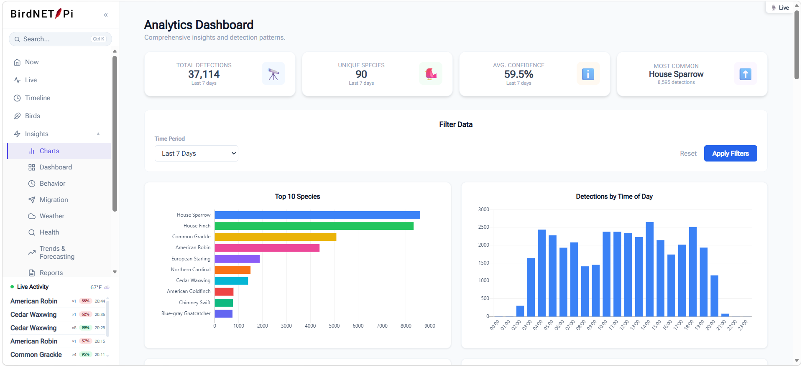
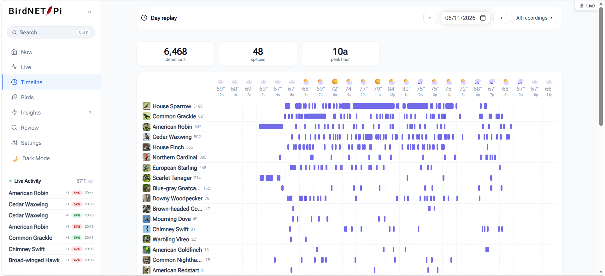

Free & open source
Turn a Raspberry Pi into a 24/7 backyard bird observatory
BirdNET-Pi Enhanced Version identifies birds by sound in real time and turns every detection into something you can actually explore — a modern dashboard, interactive analytics, weather-aware patterns, and plain-English insights about the birds around your home.

More than bird identification
Connect a USB microphone to your Raspberry Pi and BirdNET-Pi Enhanced listens continuously, identifies species using the BirdNET machine learning framework, saves the best recordings, and organizes everything into a web dashboard you can open from any device on your network.
Identifying birds is where it starts, not where it stops. The Enhanced Version was built to answer the questions that come after the detection: when does the dawn chorus begin here, which species are active at night, how does weather change activity, who is arriving or disappearing with the seasons, and how does the biodiversity around your home shift over the year.
Always listening
Continuous recording with automatic real-time identification, clip extraction, and disk-space management that purges old audio for you.
Interactive analytics
Species rankings, detection trends, diversity over time, and time-of-day patterns — all fully interactive rather than static images.
Weather aware
Hourly weather is recorded alongside detections, so you can see how temperature and conditions actually affect activity.
Plain-English insights
Dawn chorus, nocturnal species, rare visitors, new arrivals, and seasonal presence — written as conclusions, not raw numbers.
Review your detections
A keyboard-driven review queue with side-by-side comparison clips so you can confirm or reject uncertain identifications.
Dark mode throughout
A cohesive visual system across every page, including a genuine dark theme that respects your system preference.
Install it with one command
On a fresh 64-bit Raspberry Pi OS installation, this is the whole setup. You can run it as the very first command on first boot — the installer handles the necessary updates itself.
curl -s https://raw.githubusercontent.com/zach7036/BirdNET-Pi-Enhanced-Version/main/newinstaller.sh | bashA Raspberry Pi 5, 4B, or 400 is recommended, since the analytics and insights pages do real work over your detection history. See the full installation guide for hardware, OS imaging, microphone choice, and first-login steps.
See it in action


Browse the full screenshot gallery →
Built on a strong open-source foundation
BirdNET-Pi Enhanced builds on the work of Nachtzuster and original BirdNET-Pi creator Patrick McGuire. It keeps the proven detection core intact while adding a substantially redesigned interface, expanded analytics, weather-aware visualizations, better media tools, and an entirely new suite of behavioral and ecological insights.
Bird identification is powered by the BirdNET framework, developed by the K. Lisa Yang Center for Conservation Bioacoustics at the Cornell Lab of Ornithology together with Chemnitz University of Technology.
License: BirdNET-Pi and BirdNET-Lite are licensed CC BY-NC-SA 4.0. Commercial use is not permitted. Please review the full license before using, modifying, or redistributing this project.